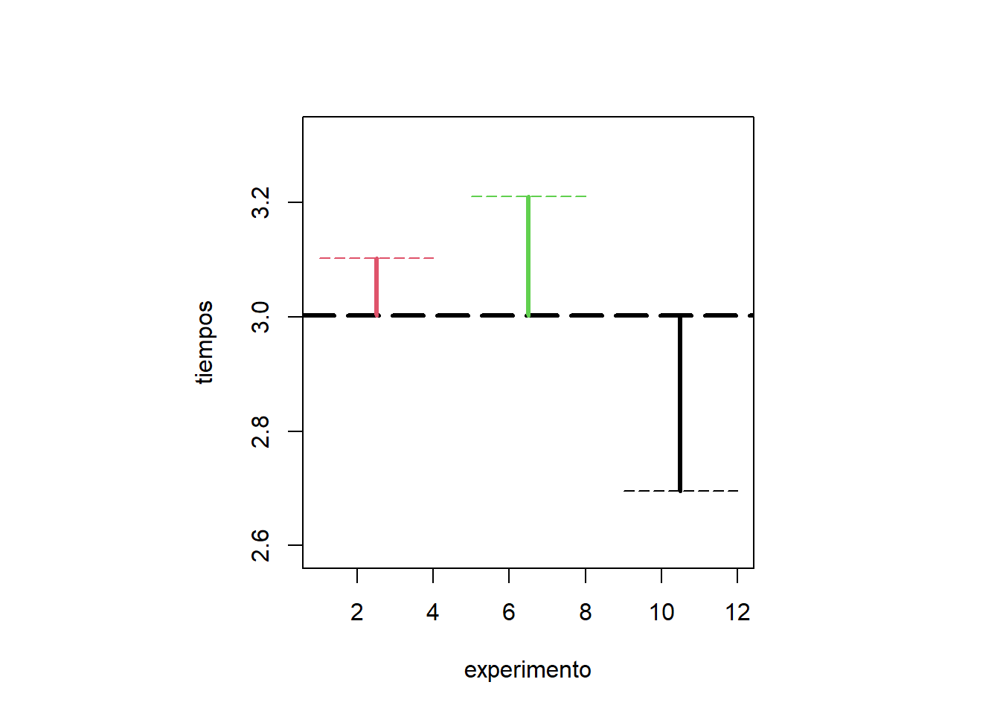
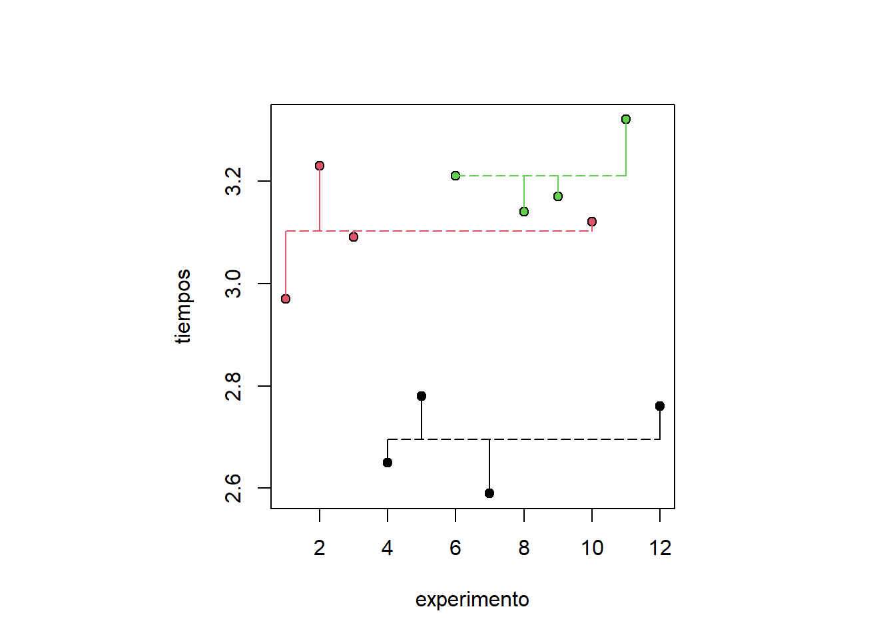
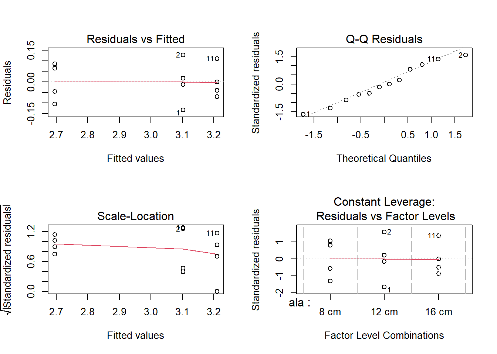
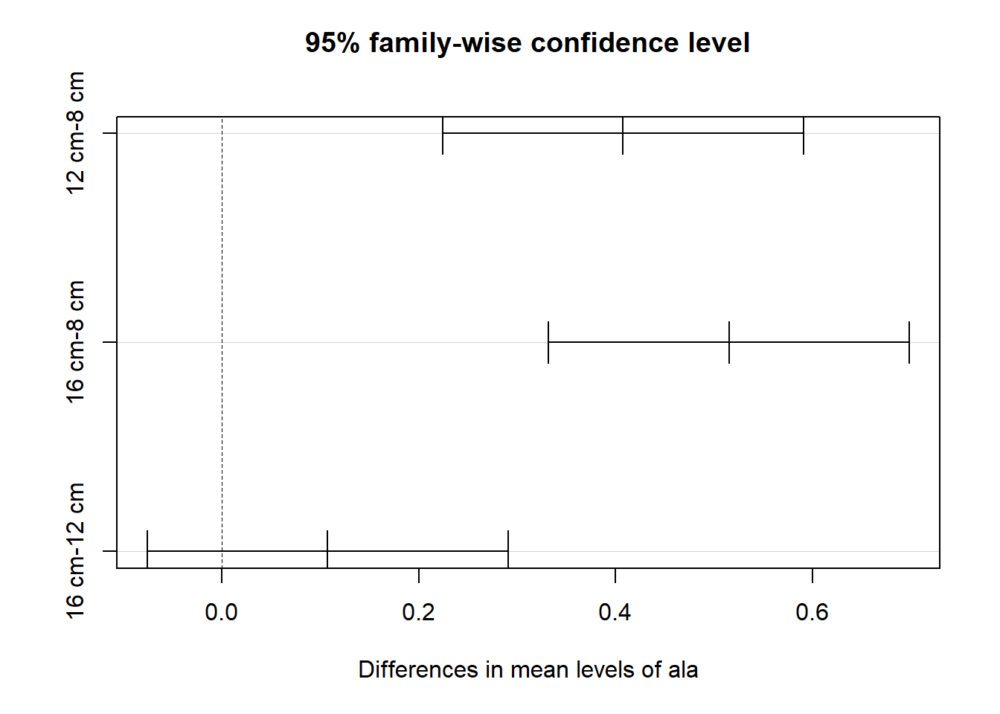
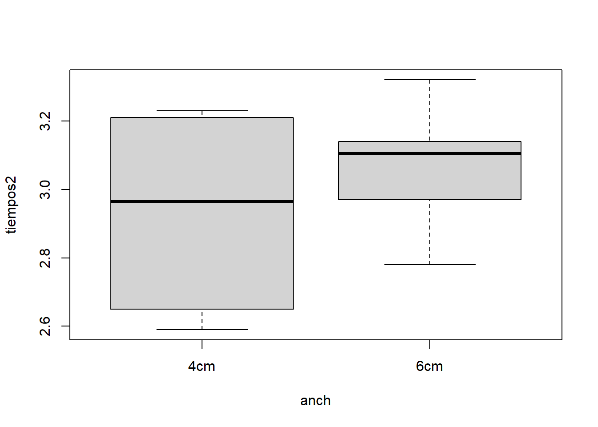
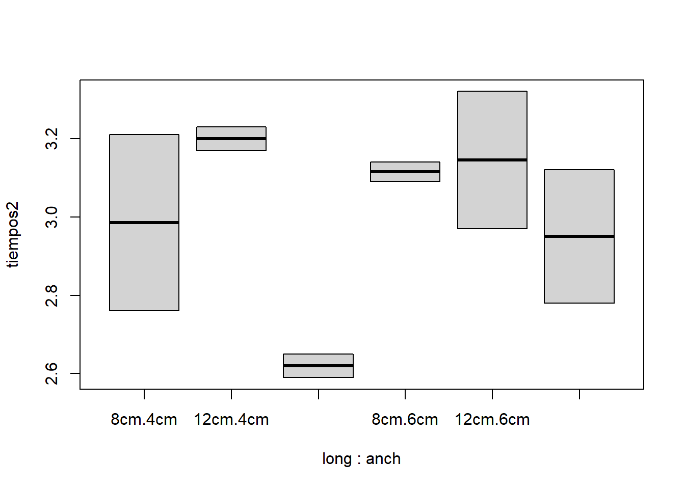
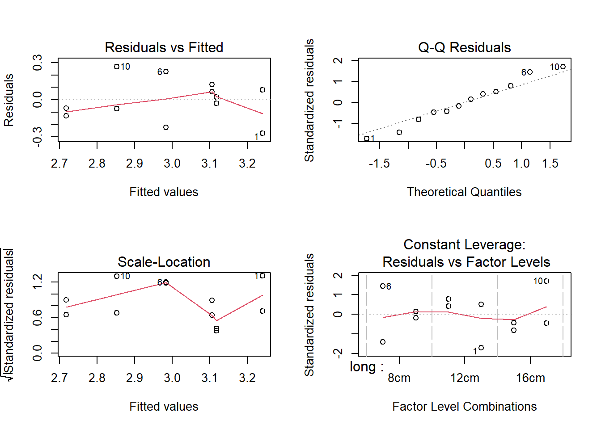
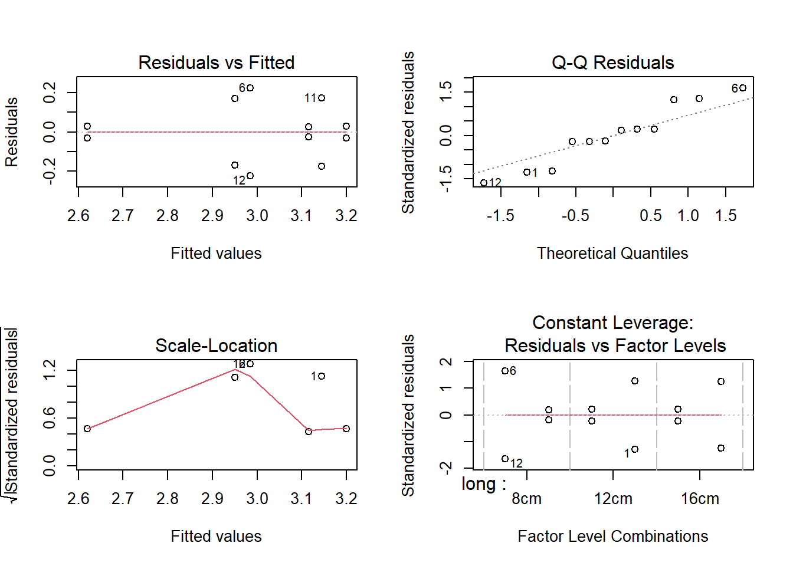

tiempos <- c(2.97, 3.23, 3.09, 2.65, 2.78, 3.21, 2.59, 3.14, 3.17, 3.12, 3.32, 2.76)
ala <- c("12 cm", "12 cm", "12 cm", "8 cm", "8 cm", "16 cm", "8 cm", "16 cm", "16 cm", "12 cm", "16 cm", "8 cm")
ala <- factor(ala, levels = c("8 cm", "12 cm", "16 cm"))
heli3 <- data.frame(tiempos, ala)
heli2 <- data.frame(tiempos, ala)[ala != "12 cm", ]2 Diseño de experimentos
En este tema se estudian los denominados modelos de diseño de experimentos, que se incluyen entre los modelos lineales. En ellos, como ya se ha indicado, la denominada variable respuesta debe ser cuantitativa/numérica continua. Por el contrario, la(s) variable(s) explicativa(s) debe(n) ser categórica(s), y en este contexto se denomina(n) factor(es), y se supone que influye(n) sobre la variable respuesta.
Una muy buena referencia para este tema es el libro “Regresión y diseño de experimentos” de Daniel Peña, Peña (2002), concretamente los capítulos 2 a 4. Otro libro de referencia “clásico” es “Design and Analysis of Experiments” de Douglas Montgomery, Montgomery (2008) capítulos …. Otro libro de referencia con un buen contenido matemático y práctico es “Linear Models with R” de Julian Faraway, Faraway (2004) capítulos ….
Nota: En este tema se trata el diseño de experimentos habitualmente denominado “clásico”, por contraposición al diseño óptimo de experimentos (mi línea de investigación) en el que se considera el enfoque experimental en modelos de regresión.
Como en el capítulo de modelos lineales de regresión, cabe distinguir entre modelos de un sólo factor, los más sencillos, y dos o más factores, en los que no sólo se tiene en cuenta el efecto de cada factor sobre la respuesta, sino las posibles interacciones entre los mismos. Citamos algunos casos, que desarrollaremos: - Diseños unifactoriales, con un único factor con dos o más niveles (tratamientos). - Diseños bifactoriales: - con o sin réplicas, y con o sin interacción (diseños por bloques). - Diseños de más de dos factores. - Diseños factoriales a 2 niveles (2^k).
Por extensión, no entraremos en diseños “con nombre propio” como los cuadrados latinos y los grecolatinos, los diseños Plackett-Burman, los Box-Behnken, ni con los modelos con efectos aleatorios, que se desarrollan en el Capítulo 3 de Peña (2002) ¿también los diseños PB y BB?. Tampoco describiremos los diseños factoriales fraccionados (Peña (2002), Capítulo 4), ni los diseños de superficie de respuesta (Peña (2002), Capítulo 5).
2.1 Nociones básicas
¿Qué es un experimento?
Acudiendo a la definición de la RAE, es una “operación destinada a descubrir, comprobar o demostrar determinados fenómenos o principios científicos. Mendel realizó importantes experimentos genéticos con guisantes.”.
Enlazándolo con la frase inicial del Capítulo, un experimento consiste en observar/medir el valor de la variable respuesta (cuantitativa), para distintos valores (categorías) del factor o factores. Por ejemplo, - medir el peso de jamones (kg), para distintos valores del factor “genética”, y/o del factor “estación”, etc. - medir las emisiones directas de CO2 de un motor (g CO2/s), para distintos valores del factor “presión de admisión”, la “temperatura de admisión”, el “% de mezcla de metanol”, etc. - medir el tiempo de vuelo de helicópteros de papel (segundos), para distintos valores del factor “longitud de las alas”, “anchura de las alas”, “gramaje del papel”, “clip”, etc.
¿Qué significa diseñar un experimento?
Diseñar un experimento es determinar las condiciones experimentales (valores de las variables controlables) para las que se obtendrán las observaciones de la variable respuesta (que se espera que presenten cambios según las condiciones experimentales), y que proporcionarán información relevante (o no) sobre el fenómeno estudiado para indentificar las razones del cambio. Hay que tener en cuenta que, durante el experimento pueden afectar otras variables no controlables por el experimentador (véanse más adelante los principios básicos del DoE).
Siguiendo con el ejemplo,
- determinar varias genéticas (Duroc, Traxx, Magnus … ) para comparar el peso del jamón entre ellas, o la combinación genéticas con las estaciones (invierno, primavera, verano, otoño), etc. para encontrar las razones del cambio en el peso del jamón.
- determinar los niveles de presión de admisión (1 bar, 1.5 bares…), temperatura de admisión (35ºC, 65ºC …), % de mezcla de metanol (0%, 10%, 20% … de sustitución -energía-), etc. que se van combinar para estudiar su efecto directo y/o conjunto sobre las emisiones directas de CO2 del motor.
- determinar la longitud de las alas (10, 15, 20 cm …), la anchura de las alas (4, 6, 8 cm …), el gramaje del papel (80 g/m2, 120 g/m2 …), el uso de clip (con clip, sin clip) para estudiar su efecto sobre el tiempo de vuelo de los helicópteros de papel.
Nota: En el caso del diseño óptimo de experimentos, se determinarán los mejores valores de la variable (o variables) explicativa(s) \(X\) donde observar el valor de la respuesta \(Y\). Por ejemplo, en el caso de la regresión lineal simple o recta de regresión, los mejores “lugares” donde observar son los dos valores extremos donde esté definida la variable \(X\), dado que una recta queda determinada por 2 “puntos”.
¿Por qué es importante diseñar un experimento?
Muy resumidamente, por “costes”… un buen diseño de experimento permite ahorrar tiempo, recursos y riesgos (…costes en el sentido amplio de la palabra), y conduce a un análisis adecuado/correcto. Además, responde al principio de “pensar antes de actuar”.
2.2 Principios básicos del DoE
2.2.1 Aleatorización
La aletorización es la piedra angular de los métodos estadísticos. Por aleatorización se entiende tanto la asignación del material experimental como el orden en que se realizan los experimentos. Uno de los requisitos estadísticos es que las observaciones (o los errores) sean variables aleatorias con distribuciones independientes.
La aleatorización también ayuda a promediar los efectos de los factores que no conocemos o que no están bajo control.
2.2.2 Réplicas
Una réplica es la repetición de un experimento bajo las mismas condiciones. Permite estimar la variabilidad de los resultados y proporciona una medida de la precisión del experimento.
2.2.3 Bloqueo
El bloqueo se utiliza para controlar la variabilidad de las respuestas producida por factores que no son de interés, pero se pueden controlar. Consiste en dividir el experimento en bloques homogéneos, de forma que las diferencias entre los bloques sean menores que las diferencias entre los tratamientos. Esto permite reducir la variabilidad residual y aumentar la precisión del experimento.
2.3 Procedimiento estadístico de un experimento
Siguiendo el apartado “Directrices para el diseño de experimentos” de Peña (2002), el procedimiento estadístico de un experimento se puede resumir en los siguientes pasos:
- Planteamiento del problema
- Definicion de las variables involucradas. Variable respuesta y factores controlables/explicativos, no controlables, ruido (niveles, rangos)
- Selección del modelo
- Elección del diseño experimental
- Realización del experimento, toma de observaciones de la variable respuesta
- Análisis estadístico de los datos obtenidos
- Conclusiones y recomendaciones.
2.4 Modelo ANOVA
Nota: Libro de Peña y muchos otros: ANOVA como “ampliación” de comparación de dos muestras de ¿Estadística 1?
La herramienta principal para el análisis de los modelos de diseño de experimentos es el modelo de ANálisis de la VArianza, modelo ANOVA. Es un modelo lineal que permite modelizar (de nuevo de forma aproximada) el comportamiento de una variable respuesta cuantitativa, \(Y\), mediante un función lineal de una o varias variables explicativas categóricas/factores, \(X_1, \ldots, X_k\).$.
El caso más simple es el de un único factor con 2 o más categorías/niveles distintos, que se denomina ANOVA de un factor (ANOVA univariante, ANOVA de una vía o One-way ANOVA). En este caso la formulación del modelo lineal es ligeramente distinta (pero equivalente) al del modelo de regresión lineal: \[Y_{ij} = \mu + \tau_i +\epsilon_{ij}, \qquad i=1, \ldots, l \text{ (niveles); } j=1,\ldots, n_i \text{ (réplicas)}\] donde \(Y_{ij}\) son las observaciones/respuestas/mediciones obtenidas como resultado del experimento (variable respuesta), \(\mu\) es la media global de dichas observaciones, común a todos los niveles, \(\tau_i\) es el efecto del nivel \(i\) del factor (efecto del tratamiento i-ésimo: parámetro que mide su influencia en la respuesta) y \(\epsilon_{ij}\) es el error aleatorio asociado a la observación \(j\) del nivel \(i\) del factor.
La analogía con el modelo de regresión es directa, \(\mu\) es el equivalente a \(\beta_0\), y \(\tau_i\) es el equivalente a \(\beta_i\) de una variable categórica dummy.
Los supuestos habituales sobre el error son los mismos que en el modelo de regresión: media cero, \(E[\epsilon]=0\) , varianza constante, \(var(\epsilon)=\sigma^2I\), y seguir una distribución normal.
Nota: 1. Cuando hay un único factor, con dos niveles distintos, el ANOVA coincide exactamente con la prueba t-de Student.
2. La generalización a varias variables categóricas (factores) es directa, y se denomina ANOVA de dos o más factores.
El ANOVA compara la respuesta media de los distintos niveles que conforman los factores, pero lo realiza con la información proporcionada por la variabilidad, de ahí su nombre. Dicho análisis se deriva de la partición de la variabilidad total en los dos componentes ya mencionados en el capítulo de regresión y que aquí son: la variabilidad debida a los efectos de los factores (tratamiento) y la variabilidad debida a los residuos. \[SC_{total} = SC_{factor} + SC_{residual},\]
donde \[SC_{total}=\sum_{i=1}^l \sum_{j=1}^{n_i} (y_{ij}-\bar{y})^2\] es la suma de cuadradados entre las observaciones y el gran promedio,
\[SC_{factor}= \sum_{i=1}^l n_i(\bar{y}_{i.}-\bar{y})^2\] es la suma de cuadrados entre los promedios de los tratamientos y el gran promedio, y
\[SC_{residual}=\sum_{i=1}^l \sum_{j=1}^{n_i} (y_{ij}-\bar{y}_{i.})^2\]
es la suma de cuadrados de las diferencias de las observaciones dentro de los tratamientos y el promedio de los tratamientos.
Estas sumas de cuadrados tienen \(N-1\), \(l-1\) y \(N-l\) grados de libertad, respectivamente, siendo \(N\) el número total de observaciones y \(n_i\) el número de observaciones en el tratamiento i-ésimo. Y por tanto:
\[SCM_{Total}=\frac{SC_{Total}}{N-1}, \quad SCM_{factor}=\frac{SC_{factor}}{l-1} \quad \text{ y } \quad SCM_{residual}=\frac{SC_{residual}}{N-l}\]
2.4.1 Estimación de \(\sigma^2\)
Un tratamiento matemático de las sumas de cuadrados medios nos da que los valores medios/esperados de las sumas de cuadrados medios son: \[E(SCM_{residual})=\sigma^2\]
\[E(SCM_{factor})=\sigma^2 + \frac{n\sum^l \tau_i^2}{l-1}\]
Y podemos decir que \(SCM_{residual}\) estima \(\sigma^2\) y, si no hay diferencias en las medias de los \(l\) tratamientos (\(\tau_i=0\)), \(SCM_{factor}\) también.
En cambio, si hay diferencias, \(SCM_{factor}>SCM_{residual}\).
2.4.2 Contraste de hipótesis ANOVA
En este caso, el contraste de hipótesis que estamos realizando se enuncia así:
\[\begin{eqnarray} H_0 &:& \tau_1 = \tau_2 = \tau_3 = \tau_4 = \tau_5 = 0 \\ H_1 &:& \text{Al menos uno de los } \tau_i \text{ es distinto de cero.} \end{eqnarray}\]
O lo que es equivalente:
\[\begin{eqnarray} H_0 &:& \mu_1 = \mu_2 = \mu_3 = \mu_4 = \mu_5 \\ H_1 &:& \text{Al menos una de las } \mu_i \text{ es distinta.} \end{eqnarray}\]
2.4.3 Comprobación de los supuestos
Como en regresión, los supuestos se comprueban a través de los residuos. En el caso práctico con R se comprobarán visualmente mediante la función plot(), o través de contrastes: - Shapiro-Wilk (normalidad), - Barlett o Levene (homogeneidad de varianzas): \[\begin{eqnarray}
H_0 &:& \sigma_1 = \ldots = \sigma_l \\
H_1 &:& \text{Al menos una de las } \sigma_i \text{ es distinta de las demás,}
\end{eqnarray}\] - Durbin-Watson (independencia de los residuos).
2.4.4 Comparaciones múltiples
Los contrastes de comparaciones múltiples, post-hoc o a posteriori son contrastes que se muestran relevantes una vez que hemos ajustado nuestro modelo. Se usan para comparar medias de observaciones pertenecientes al mismo nivel, con otras medias de observaciones pertenecientes a otro nivel.
La hipótesis nula en estos casos es siempre la igualdad de las medias. \[\begin{eqnarray} H_0 &:& \mu_i = \mu_j \\ H_1 &:& \mu_i \neq \mu_j \end{eqnarray}\]
Hay que ser muy precavidos porque las comparaciones múltiples inflan el error de tipo I (Falsar \(H_0\) cuando en realidad es cierta), porque es probable que en un porcentaje elevado de las comparaciones, las diferencias serán el resultado del error aleatorio. Por ello, es necesario realizar una corrección del nivel de significación \(\alpha\) para que el error tipo I global no sea demasiado grande.
- Falsar (RAE): En la ciencia, desmentir una hipótesis o una teoría mediante pruebas o experimentos.
De entre los distintos métodos de comparaciones múltiples, los más utilizados son:
Bonferroni: Un enfoque para asegurarse que el nivel de confianza simultáneo no sea demasiado pequeño es sustituir la significación \(\alpha\) por \(\alpha/r\) donde \(r\) es el número de comparaciones. Este método está pensado para realizar un número de comparaciones fijado a priori.
Scheffé: En el método de Scheffé el error tipo I (rechazar \(H_0\) cuando es cierta), es a lo sumo \(\alpha\) para cualquiera de las comparaciones posibles. Esto es útil cuando queremos realizar todas y cada una de las posibles comparaciones.
Tukey: Tukey propuso un procedimiento para probar hipótesis para las que el nivel de significación global es exactamente \(\alpha\) cuando los tamaños de las muestras son iguales y es a lo sumo \(\alpha\) cuando los tamaños de las muestras no son iguales. Este procedimiento está pensado cuando resulta de interés realizar todas las comparaciones posibles.
Diferencia Significativa Mínima de Fisher (LSD): Basado en el estadístico F, en definitiva consiste en realizar todas las pruebas t posibles pero realizando una corrección en el cálculo de la desviación típica. Este método calcula una desviación típica combinada \(\sqrt{SCM_{residual}(\frac{1}{n_i}+\frac{1}{n_j})}\) en lugar de usar la de los dos grupos que se comparan. Esto aumenta la potencia del contraste pero no realiza una corrección por comparaciones múltiples.
La Least Significative Difference LSD consiste en: \[LSD=t_{\alpha/2,N-a}\sqrt{SCM_{residual}(\frac{1}{n_i}+\frac{1}{n_j})}.\] Y el estadístico de contraste: \[t_0=\frac{{\bar{y}_{i.}-\bar{y}_{j.}}}{\sqrt{SCM_{residual}(\frac{1}{n_i}+\frac{1}{n_j})}}.\]Rango Múltiple Duncan: El test de Duncan parece ser especialmente conservador respecto al error de Tipo II con el riesgo de aumentar el error de Tipo I:
2.4.5 ¿Qué método de comparación por pares debe usarse?
Desafortunadamente, no hay una respuesta precisa para esa pregunta. Existen estudios de simulación que dan como el más eficaz al método LSD de Fisher y el de Rango Múltiple de Duncan. Cada método tiene sus ventajas e inconvenientes, se puede consultar una comparativa.
Además hay otros métodos de comparaciones múltiples y sus correspondientes paquetes en R.
Un caso particular son las comparaciones con un control: En muchos experimentos, uno de los tratamientos es un control o referencia. Solo interesa realizar \(a-1\) comparaciones de cada grupo con el control. El test de Dunnett es una modificación de la prueba t.
2.5 Diseños bifactoriales: diseño por bloques
El caso más sencillo de diseño de experimentos con 2 factores es el diseño por bloques, de aplicación cuando de los 2 factores, uno es un factor perturbador (sobre el que no existe un interés específico pero su variabilidad puede afectar a la respuesta).
En ocasiones, el factor perturbador es desconocido y no controlable. En estos casos la mejor solución es aplicar el principio de aleatorización. Sin embargo, si la fuente de variabilidad es conocida y controlable podemos utilizar la formación de Bloques.
El diseño por bloques es una técnica que permite controlar la variabilidad de los resultados debida a factores no controlados, bloques. Se trata de dividir el experimento en bloques homogéneos, de forma que las diferencias entre los bloques sean menores que las diferencias entre los tratamientos. Otra opción posible es manteer fijo el factor perturbador y variar el factor de interés (volviendo al caso del diseño unifactorial).
Si disponemos en general de \(a\) tratamientos (niveles del factor de interés) y \(b\) bloques (niveles del factor perturbador), el modelo estadístico será:
\[y_{ij}=\mu+\tau_i+\beta_j+\epsilon_{ij}, \qquad i=1, \ldots, a; j=1, \ldots, b\]
Estamos interesados solo en el contraste de hipótesis sobre los efectos \(\tau_i\).
Descomponiendo ahora la variabilidad de las observaciones teniendo en cuenta los dos factores tenemos:
\[SC_{Total}=SC_{tratamiento}+SC_{bloque}+SC_{residual}\]
\[\sum^a \sum^b (y_{ij}-\bar{y})^2=b \sum^a (\bar{y}_{i.}-\bar{y})^2+a \sum^b (\bar{y}_{.j}-\bar{y})^2+\sum^a \sum^b (y_{ij}-\bar{y}_{.j}-\bar{y}_{i.}+\bar{y})^2\]
Siendo \((a-1)\) los grados de libertad para Tratamiento, \((b-1)\) para el factor Bloque y \(ab-1-(a-1)-(b-1)=(a-1)(b-1)\) para los residuales.
2.6 Diseños bifactoriales con interacción
Consideramos ahora el caso de 2 factores de interés que podrían tener un efecto sobre la respuesta, y que, además, podrían interactuar entre ellos, lo que añadiría otro efecto sobre la misma.
Si tenemos el factor A (con a niveles) y el factor B (con b niveles), el diseño bifactorial básico consiste en la combinación de todos los niveles de ambos factores, es decir una cantidad \(a\cdot b\) de experimentos.
Disponer de réplicas significa obtener combinaciones completas de \(a\cdot b\) experimentos. Así, el diseño bifactorial tendrá \(a\cdot b\) experimentos (sin réplica) o \(2 a\cdot b\), \(3 a\cdot b\), etc. experimentos (con réplica). Las réplicas permiten estimar la variabilidad de las observaciones en cada combinación experimental y realizar contrastes de hipótesis sobre los efectos de los factores y sus interacciones.
Con este tipo de diseños se intenta responder a dos tipos de preguntas:
- ¿Qué efectos tienen el factor A y el factor B sobre la respuesta?
- ¿Existe algún tratamiento del factor A que produzca de manera regular una mejor respuesta independientemente del factor B?
El modelo de los efectos en este caso viene dado por:
\[y_{ijk}=\mu + \tau_i + \beta_j + (\tau\beta)_{ij}+ \epsilon_{ijk}, \quad i=1,\dots,a; j=1,\dots,b; k=1,\dots,n\]
La suma de cuadrados en este caso puede escribirse como:
\[SC_{Total}=SC_A+SC_B+SC_{AB}+SC_{residual}\]
\[\sum^a \sum^b \sum^n (y_{ijk}-\bar{y})^2= bn\sum^a (\bar{y_{i..}}-\bar{y})^2+ an\sum^b (\bar{y_{.j.}}-\bar{y})^2+\] \[n\sum^a\sum^b (\bar{y_{ij.}}-\bar{y_{i..}}-\bar{y_{.j.}}+\bar{y})^2+ \sum^a \sum^b \sum^n (y_{ijk}-\bar{y_{ij.}})^2\]
Por el último componente se observa que debe haber por lo menos dos réplicas (\(n\geq 2\)) para poder obtener una suma de cuadrados del error.
Siendo los grados de libertad:
| Efecto | G.L. |
|---|---|
| A | a-1 |
| B | b-1 |
| AB | (a-1)(b-1) |
| Error | ab(n-1) |
| Total | abn-1 |
2.6.1 Una sola réplica
En este caso, la varianza del error, \(\sigma^2\) no es estimable.
\[SC_{residual}=\sum^a \sum^b \sum^n (y_{ijk}-\bar{y_{ij.}})^2\]
Esto implica que el efecto de la interacción de los dos factores \((\tau\beta)_{ij}\) y el error experimental no pueden separarse de alguna manera obvia.
\[SC_{Total}=SC_A+SC_B+SC_{AB+Residual}\]
\[SC_{AB+Residual}=SC_{Total}-SC_A-SC_B\]
Si no hay interacción entre ambos factores \((\tau\beta)_{ij}=0\), existe un modelo posible:
\[y_{ij}=\mu+\tau_i+\beta_j\]
2.7 Diseños de más de dos factores.
2.8 Diseños factoriales a dos niveles (2^k)
2.9 Modelo lineal de regresión
2.9.1 Suma de Cuadrados en la regresión.
Las distancias verticales entre cada uno de los puntos, \((x_i,y_i)\), y la recta de regresión, \(\hat{y_i}=\beta_0 + \beta_1x_i\), son los residuos, \(\epsilon_i\). Estas distancias expresan el error aleatorio del modelo. ¿Hasta qué punto es más importante el efecto de la variable \(X\) sobre la variable \(Y\) que el error de los residuos?
La recta de regresión siempre pasa por el centro de los datos \((\bar{X},\bar{Y})\), ese punto se conoce como centroide. Es el centro de gravedad de la nube de puntos.
Si las variables \(X\) e \(Y\) no estuviesen relacionadas entonces el hecho de conocer \(X\) no daría información para tener una mejor estimación de \(Y\). La mejor predicción que podríamos hacer sería predecir \(Y\) con su media, \(\bar{Y}\), sin tener en cuenta el valor de \(X\). Este modelo, el mas sencillo, es el que vamos a intentar falsar.
\[H_0: \beta_10\] \[H_1: \beta_1\neq 0\]
Para obtener evidencias que nos permitan rechazar la \(H_0\) vamos a estudiar la variabilidad (INFORMACIÓN) de la variable respuesta.
\[SC_{total}=SC_y=\sum (y_i-\bar{y})^2\]
\(SC_{total}\) es el numerador de la varianza y se puede calcular multiplicando la varianza por los grados de libertad n-1. Y puede descomponerse en \(SC_{regresion}\) y \(SC_{residual\).
\[SC_{total}=SC_{regresion}+SC_{residual}\] \[\sum (y-\bar{y})^2={\sum (\hat{y}-\bar{y})^2}+\sum (y-\hat{y})^2\]
Los grados de libertad totales son n-1, gastamos un grado de libertad al dar la media, \(\bar{y}\), \(SC_{totales}\).
Los grados de libertad de los residuos son n-2, necesitamos \(\beta_0\) y \(\beta_1\) para calcular \(SC_{residuos}\).
Con lo que nos queda 1 grado de libertad para la suma de cuadrados de la regresión \(SC_{regresion}\). Es el parametro extra que hemos estimado \(\beta_1\), la pendiente.
Para completar este estudio de cómo se reparte la variabilidad, promediamos las respectivas sumas de cuadrados por sus grados de libertad (Medias de Cuadrados), en definitiva eso es calcular varianzas.
Nunca seremos capaces de realizar predicciones perfectas, todos los modelos son falsos, pero estamos interesados en comparar el Efecto de X sobre Y con el Error Aleatorio:
\[\frac{\text{Efecto de X sobre Y}}{\text{Error Aleatorio}}=\frac{\text{Varianza de la Regresión}}{\text{Varianza Error}}=\frac{SCM_{regresion}}{SCM_{residual}}=F\]
Esto es lo que se conoce en estadística como un Análisis de la Varianza, ANOVA. Nuestro modelo sencillo que intentamos falsar es \(H_0:\beta_1=0\). Para que podamos falsar dicha hipótesis la Varianza de la Regresión debe ser mayor, cuanto más grande mejor, que la Varianza del Error.
Comparamos entonces el estadístico F obtenido de dividir las dos varianzas con una distribución F con los grados de libertad correspondientes, 1 en el numerador y n-2 en el denominador. Calculando el p-valor correspondiente se podrá rechazar (o no) la hipótesis nula.
2.10 Diseño de experimentos
2.11 Casos práctico: Helicóptero de Box
Consideramos el ejemplo del helicóptero de Box del que se puede obtener información en https://williamghunter.net/george-box-articles/teaching-engineers-experimental-design-with-a-paper-helicopter.
2.11.1 Diseño unifactorial
Nos preguntamos si la longitud del ala del helicóptero influye en su tiempo de caída/vuelo. Esta simple pregunta permite plantear un diseño de 1 sólo factor, la longitud del ala, frente a la variable respuesta, el tiempo de caída. Para ello escogemos 3 valores distintos (3 categorías) de la longitud del ala.
El ejemplo es equivalente a preguntarse si influye en el tiempo de caía el grosor del papel (tomando 3 grosores distintos), o si influye el ponerle clip al helicóptero (en este caso sólo 2 valores, ponerselo o no, variable dicotómica), etc. Más adelante veremos cómo manejar 2 o más variables a la vez.
Las mediciones realizadas del tiempo de caída (en segundos) desde una determinada altura de 12 helicópteros de papel (réplicas, no repeticiones) construidos con las mismas dimensiones excepto la longitud del ala (variable explicativa, con 3 categorías: 8, 12, y 16 cm) son:
| 8 cm | 12 cm | 16 cm |
|---|---|---|
| 2.59 | 2.97 | 3.14 |
| 2.65 | 3.09 | 3.17 |
| 2.76 | 3.12 | 3.21 |
| 2.78 | 3.23 | 3.32 |
Comparación de 2 niveles
Primero consideraremos sólo 2 longitudes de ala de los helicópteros: 8 cm y 16 cm. Posteriormente trabajaremos la comparación entre las 3 longitudes de ala. El ANOVA viene a responder a la pregunta técnica: ¿Las diferencias entre los dos (tres) tratamientos (longitudes de ala) se deben simplemente al azar? ¿o realmente son diferencias auténticas, significativas?
Hay que tener en cuenta que, en este caso, el diseño es balanceado (mismo número de elementos en cada tratamiento). El lector puede experimentar añadiendo u omitiendo un dato y observar los cambios que se producen.
Los datos en el orden aleatorio de lanzamiento/medición son:
Realizamos un resumen gráfico y numérico de los datos:
# Diagrama de caja
boxplot(tiempos ~ ala, data = heli2)
# Añade los valores de los 4 experimentos
stripchart(tiempos ~ ala, data = heli2, vertical = T, pch = 1, add = T) 
# Resumen numérico directo: mu_i y sigma^2_i
medias <- tapply(heli2$tiempos, heli2$ala, mean)
varian <- tapply(heli2$tiempos, heli2$ala, var)
rbind(medias, varian) 8 cm 12 cm 16 cm
medias 2.695000000 NA 3.2100
varian 0.008166667 NA 0.0062Con el análisis descriptivo (gráfico y numérico) parece haber diferencias entre el tiempo de caída de las 2 longitudes de ala. ¿Serán significativas dichas diferencias? Entramos en el terreno inferencial, aplicando el análisis ANOVA, que como bien sabemos, compara medias considerando las varianzas. La hipótesis de partida, hipótesis nula, \(H_0\), es la de NO influencia, es decir las medias de ambos tratamientos son la misma, \(\mu_{8} = \mu_{16}\). Llegados a este punto, al ser una comparación de dos medias, surge la duda de aplicar el contraste \(t\) de Student de dos muestras independientes. Vamos a ver que dicho contraste y el ANOVA son equivalentes en este caso. Empezamos con el ANOVA:
anova.h2 <- aov(tiempos ~ ala,
data = heli2)
# Tabla ANOVA
summary(anova.h2) Df Sum Sq Mean Sq F value Pr(>F)
ala 1 0.5305 0.5305 73.84 0.000137 ***
Residuals 6 0.0431 0.0072
---
Signif. codes: 0 '***' 0.001 '**' 0.01 '*' 0.05 '.' 0.1 ' ' 1# Como contraste t de Student
t.test(tiempos ~ ala,
data = heli2,
var.equal = TRUE) #Supuesto del ANOVA
Two Sample t-test
data: tiempos by ala
t = -8.5933, df = 6, p-value = 0.0001365
alternative hypothesis: true difference in means between group 8 cm and group 16 cm is not equal to 0
95 percent confidence interval:
-0.6616447 -0.3683553
sample estimates:
mean in group 8 cm mean in group 16 cm
2.695 3.210 En ambos casos el p-valor obtenido es pequeño, de hecho, el lector atento habrá visto que coinciden en su valor (aunque son dos estadísticos distintos)!
Recordatorio: Hay una relación directa entre la distribución t de Student y la distribución F, concretamente: \(t^2 = F\). Puede comprobarse con los datos del ejemplo anterior.
Como se sabe, el p - valor es la probabilidad de que, siendo las medias poblacionales iguales (hipótesis nula), encontrásemos por azar diferencias entre las medias muestrales mayores que las que hemos encontrado. Por lo que al ser dicha probabilidad muy pequeña, podemos falsar la idea de que las medias poblacionales sean iguales (por azar es muy poco probable encontrar las diferencias que se han observado). Podemos decir que la longitud del ala influye en el tiempo de caída.
En la tabla ANOVA podemos ver todos los cálculos intermedios para la obtención del estadístico F, a saber, (por orden) grados de libertad, sumas de cuadrados y media de suma de cuadrados.
También podemos “resolver” el problema como modelo lineal!!
Nota técnica: De hecho la función aov() hace una “llamada” a la función lm()
anova.h2.ml <- lm(tiempos ~ ala,
data = heli2)
# Tabla ANOVA
anova(anova.h2.ml)Analysis of Variance Table
Response: tiempos
Df Sum Sq Mean Sq F value Pr(>F)
ala 1 0.53045 0.53045 73.844 0.0001365 ***
Residuals 6 0.04310 0.00718
---
Signif. codes: 0 '***' 0.001 '**' 0.01 '*' 0.05 '.' 0.1 ' ' 1# Modelo lineal estimado
summary(anova.h2.ml)
Call:
lm(formula = tiempos ~ ala, data = heli2)
Residuals:
Min 1Q Median 3Q Max
-0.10500 -0.05125 -0.02000 0.07000 0.11000
Coefficients:
Estimate Std. Error t value Pr(>|t|)
(Intercept) 2.69500 0.04238 63.595 1.02e-09 ***
ala16 cm 0.51500 0.05993 8.593 0.000137 ***
---
Signif. codes: 0 '***' 0.001 '**' 0.01 '*' 0.05 '.' 0.1 ' ' 1
Residual standard error: 0.08475 on 6 degrees of freedom
Multiple R-squared: 0.9249, Adjusted R-squared: 0.9123
F-statistic: 73.84 on 1 and 6 DF, p-value: 0.0001365Como se puede apreciar se llega a la misma tabla ANOVA. Y el modelo estimado aporta información complementaria… Vuelve a aparecer el mismo p-valor (obviamente), por dos lados!
Pregunta
¿Puede interpretar el valor de la estimación de “ala8 cm” obtenida?
Comparación de 3 niveles
Consideramos ahora la comparación de las 3 longitudes de ala. Primero el análisis descriptivo:
# Diagrama de caja
boxplot(tiempos ~ ala, data = heli3)
# Añade los valores de los 4 experimentos
stripchart(tiempos ~ ala, data = heli3, vertical = T, pch = 1, add = T) 
# Resumen numérico directo: mu_i y sigma^2_i
medias <- tapply(heli3$tiempos, heli3$ala, mean)
varian <- tapply(heli3$tiempos, heli3$ala, var)
# Efecto del tratamiento i-ésimo: tau_i
efecto <- tapply(heli3$tiempos, heli3$ala, mean) - mean(heli3$tiempos)
rbind(medias, varian, efecto) 8 cm 12 cm 16 cm
medias 2.695000000 3.102500 3.2100
varian 0.008166667 0.011425 0.0062
efecto -0.307500000 0.100000 0.2075Vamos a visualizar ahora los datos mostrando tanto los residuos respecto a la media (“VT”), los efectos por grupo/categoría (“VE”) y los residuos intragrupo (“VNE”):



Para el análisis inferencial, ahora no es posible aplicar el contraste de la t de Student para comparar los 3 niveles a la vez, se podrían realizar las comparaciones por pares, pero no quedaría resuelto el problema global.
anova.h3 <- lm(tiempos ~ ala,
data = heli3)
# Tabla ANOVA
anova(anova.h3)Analysis of Variance Table
Response: tiempos
Df Sum Sq Mean Sq F value Pr(>F)
ala 2 0.59045 0.295225 34.34 6.134e-05 ***
Residuals 9 0.07737 0.008597
---
Signif. codes: 0 '***' 0.001 '**' 0.01 '*' 0.05 '.' 0.1 ' ' 1# Modelo lineal estimado
summary(anova.h3)
Call:
lm(formula = tiempos ~ ala, data = heli3)
Residuals:
Min 1Q Median 3Q Max
-0.13250 -0.05125 -0.00625 0.07000 0.12750
Coefficients:
Estimate Std. Error t value Pr(>|t|)
(Intercept) 2.69500 0.04636 58.131 6.64e-13 ***
ala12 cm 0.40750 0.06556 6.215 0.000156 ***
ala16 cm 0.51500 0.06556 7.855 2.56e-05 ***
---
Signif. codes: 0 '***' 0.001 '**' 0.01 '*' 0.05 '.' 0.1 ' ' 1
Residual standard error: 0.09272 on 9 degrees of freedom
Multiple R-squared: 0.8841, Adjusted R-squared: 0.8584
F-statistic: 34.34 on 2 and 9 DF, p-value: 6.134e-05La conclusión es la misma que antes, el ala influye en el tiempo de caída. Pero, al haber 3 niveles se debe mirar si todas las medias son distintas entre sí o sólo hay algunas medias distintas. Con la salida del summary se puede apreciar que la diferencia significativa se da entre las alas de 8 y 12 cm, pero no entre las alas de 12 y 16 cm. Pero no resolvemos el problema completo. ¿Hay diferencia entre las alas de 12 y 16 cm?… Debemos acudir a los contrastes de comparaciones múltiples.
Análisis de residuos (Diagnosis)
Antes de seguir con el análisis inferencial se deben validar las hipótesis del modelo ANOVA. Como ya hicimos con los modelos de regresión, en R se puede acudir a la función plot() aplicada al objeto de tipo lm.
par(mfrow = c(2, 2))
plot(anova.h3)
No parece haber incumplimiento de ninguna de las hipótesis. Por si quedan dudas de la homogeneidad de varianzas, podemos usar el test de Barlett:
bartlett.test(tiempos ~ ala,
data = heli3)
Bartlett test of homogeneity of variances
data: tiempos by ala
Bartlett's K-squared = 0.24536, df = 2, p-value = 0.8845No podemos rechazar la homocedasticidad de los grupos.
Comparaciones múltiples
De entre las distintos contrastes de comparaciones múltiples, se utilizará el de Tukey que permite una visualización gráfica de las comparaciones lo que resulta muy intuitivo y didáctico:
( heli3.tukey <- TukeyHSD(aov(tiempos ~ ala,
data = heli3)) ) Tukey multiple comparisons of means
95% family-wise confidence level
Fit: aov(formula = tiempos ~ ala, data = heli3)
$ala
diff lwr upr p adj
12 cm-8 cm 0.4075 0.22444552 0.5905545 0.0004097
16 cm-8 cm 0.5150 0.33194552 0.6980545 0.0000680
16 cm-12 cm 0.1075 -0.07555448 0.2905545 0.2792751plot(heli3.tukey)
De la tabla, y más visualmente del gráfico, se deduce que existen diferencias significativas (controlando el nivel de significación global de todos los contrastes) entre los tiempos de caída de los helicópteros con ala 8 y 12 cm, y entre los helicópteros con ala 8 y 16 cm, dado que el intervalo de confianza de la diferencia de medias entre cada par de tiempos de caída no contiene el valor 0. Por el contrario, no podemos decir que los helicópteros con ala 12 o 16 cm tengan diferencias significativas en sus tiempos de caída. De este hecho se puede concluir que el efecto de la longitud del ala no parece lineal,
2.11.2 Diseños bifactoriales
Nos planteamos aquí realizar un diseño bifactorial para comparar el efecto de 2 variables categóricas/factores en la variable respuesta (tiempo de caída). Supongamos que interesan, tanto el efecto de la longitud de ala como el efecto de la anchura de ala, en el tiempo de caída. Considerando 2 niveles para la anchura: 4 y 6 cm, se podría definir un diseño factorial con la combinación de los 3 niveles de la longitud de ala definidos anteriormente y los 2 de la anchura. Esto llevaría a 6 (\(3 \times 2\)) tratamientos distintos, de las que se podrían hacer réplicas (o no). Si realizamos 2 réplicas de cada tratamiento, tendremos 12 helicópteros de los que mediremos su tiempo de caída.
#library(grid)
#library(conf.design)
library(DoE.base)Cargando paquete requerido: gridCargando paquete requerido: conf.designRegistered S3 method overwritten by 'DoE.base':
method from
factorize.factor conf.design
Adjuntando el paquete: 'DoE.base'The following objects are masked from 'package:stats':
aov, lmThe following object is masked from 'package:graphics':
plot.designThe following object is masked from 'package:base':
lengthsset.seed(pi)
( Dis.bifactorial <- fac.design(c(3,2),
factor.names = list(long = c("8cm", "12cm", "16cm"),
anch = c("4cm", "6cm")),
randomize = TRUE,
replications = 2) )creating full factorial with 6 runs ... run.no run.no.std.rp long anch Blocks
1 1 5.1 12cm 6cm .1
2 2 2.1 12cm 4cm .1
3 3 4.1 8cm 6cm .1
4 4 3.1 16cm 4cm .1
5 5 6.1 16cm 6cm .1
6 6 1.1 8cm 4cm .1
7 7 3.2 16cm 4cm .2
8 8 4.2 8cm 6cm .2
9 9 2.2 12cm 4cm .2
10 10 6.2 16cm 6cm .2
11 11 5.2 12cm 6cm .2
12 12 1.2 8cm 4cm .2
class=design, type= full factorial
NOTE: columns run.no and run.no.std.rp are annotation,
not part of the data frame#Consideramos los mismos tiempos del diseño unifactorial
#pero nótese que no mantenemos los valores de longitud de ala
tiempos2 <- tiempos
( Dis.bifactorial.R <- add.response(Dis.bifactorial, response = tiempos2) ) run.no run.no.std.rp long anch Blocks tiempos2
1 1 5.1 12cm 6cm .1 2.97
2 2 2.1 12cm 4cm .1 3.23
3 3 4.1 8cm 6cm .1 3.09
4 4 3.1 16cm 4cm .1 2.65
5 5 6.1 16cm 6cm .1 2.78
6 6 1.1 8cm 4cm .1 3.21
7 7 3.2 16cm 4cm .2 2.59
8 8 4.2 8cm 6cm .2 3.14
9 9 2.2 12cm 4cm .2 3.17
10 10 6.2 16cm 6cm .2 3.12
11 11 5.2 12cm 6cm .2 3.32
12 12 1.2 8cm 4cm .2 2.76
class=design, type= full factorial
NOTE: columns run.no and run.no.std.rp are annotation,
not part of the data framePlanteamos ahora distintos modelos sobre estos datos.
Diseño bifactorial sin interacción
mod.bifact <- lm(tiempos2 ~ long + anch, data = Dis.bifactorial.R)
anova(mod.bifact)Analysis of Variance Table
Response: tiempos2
Df Sum Sq Mean Sq F value Pr(>F)
long 2 0.313850 0.156925 4.1945 0.05678 .
anch 1 0.054675 0.054675 1.4614 0.26122
Residuals 8 0.299300 0.037412
---
Signif. codes: 0 '***' 0.001 '**' 0.01 '*' 0.05 '.' 0.1 ' ' 1summary(mod.bifact)
Call:
lm.default(formula = tiempos2 ~ long + anch, data = Dis.bifactorial.R)
Residuals:
Min 1Q Median 3Q Max
-0.27000 -0.08625 -0.00250 0.09125 0.26750
Coefficients:
Estimate Std. Error t value Pr(>|t|)
(Intercept) 3.05000 0.09671 31.537 1.11e-09 ***
long12cm 0.12250 0.13677 0.896 0.3966
long16cm -0.26500 0.13677 -1.938 0.0887 .
anch1 0.06750 0.05584 1.209 0.2612
---
Signif. codes: 0 '***' 0.001 '**' 0.01 '*' 0.05 '.' 0.1 ' ' 1
Residual standard error: 0.1934 on 8 degrees of freedom
Multiple R-squared: 0.5518, Adjusted R-squared: 0.3838
F-statistic: 3.283 on 3 and 8 DF, p-value: 0.07939Un complemento gráfico:
boxplot(tiempos2 ~ long, data = Dis.bifactorial.R)
boxplot(tiempos2 ~ anch, data = Dis.bifactorial.R)
boxplot(tiempos2 ~ long * anch, data = Dis.bifactorial.R)
¿Y el análisis de residuos?
par(mfrow = c(2,2))
plot(mod.bifact)
Diseño bifactorial con interacción En este caso podría tener sentido que las variables longitud y anchura del ala interactuaran… A mayor/menor valor de ambas mayor/menor será la superficie del ala.
mod.bifact.interacc <- lm(tiempos2 ~ long * anch, data = Dis.bifactorial.R)
anova(mod.bifact.interacc)Analysis of Variance Table
Response: tiempos2
Df Sum Sq Mean Sq F value Pr(>F)
long 2 0.313850 0.156925 4.1819 0.07289 .
anch 1 0.054675 0.054675 1.4570 0.27283
long:anch 2 0.074150 0.037075 0.9880 0.42569
Residuals 6 0.225150 0.037525
---
Signif. codes: 0 '***' 0.001 '**' 0.01 '*' 0.05 '.' 0.1 ' ' 1summary(mod.bifact.interacc)
Call:
lm.default(formula = tiempos2 ~ long * anch, data = Dis.bifactorial.R)
Residuals:
Min 1Q Median 3Q Max
-0.225 -0.065 0.000 0.065 0.225
Coefficients:
Estimate Std. Error t value Pr(>|t|)
(Intercept) 3.05000 0.09686 31.490 6.81e-08 ***
long12cm 0.12250 0.13698 0.894 0.406
long16cm -0.26500 0.13698 -1.935 0.101
anch1 0.06500 0.09686 0.671 0.527
long12cm:anch1 -0.09250 0.13698 -0.675 0.525
long16cm:anch1 0.10000 0.13698 0.730 0.493
---
Signif. codes: 0 '***' 0.001 '**' 0.01 '*' 0.05 '.' 0.1 ' ' 1
Residual standard error: 0.1937 on 6 degrees of freedom
Multiple R-squared: 0.6629, Adjusted R-squared: 0.3819
F-statistic: 2.359 on 5 and 6 DF, p-value: 0.1629par(mfrow = c(2,2))
plot(mod.bifact.interacc)
2.11.3 Diseño trifactorial
Si las 12 mediciones anteriores proviniesen de un diseño factorial con 3 variables, por ejemplo, añadiendo la variable “clip” a las 2 anteriores, tendríamos sólo una observación por tratamiento. Esto implicaría que no se pueden estimar todos los parámetros del modelo completo (nos quedamos sin grados de libertad), pero sí se pueden estimar modelos con inferior número de parámetros, como el modelo de efectos principales:
( Dis.trifact <- fac.design(c(3,2,2),
factor.names = list(long = c("8cm", "12cm", "16cm"),
anch = c("4cm", "6cm"),
clip = c("Si", "No")),
randomize = T ) )creating full factorial with 12 runs ... long anch clip
1 12cm 4cm No
2 16cm 6cm No
3 12cm 6cm Si
4 12cm 4cm Si
5 8cm 6cm No
6 8cm 6cm Si
7 12cm 6cm No
8 16cm 6cm Si
9 8cm 4cm No
10 8cm 4cm Si
11 16cm 4cm Si
12 16cm 4cm No
class=design, type= full factorial tiempos3 <- tiempos
( Dis.trifact.R <- add.response(Dis.trifact,
response = tiempos3) ) long anch clip tiempos3
1 12cm 4cm No 2.97
2 16cm 6cm No 3.23
3 12cm 6cm Si 3.09
4 12cm 4cm Si 2.65
5 8cm 6cm No 2.78
6 8cm 6cm Si 3.21
7 12cm 6cm No 2.59
8 16cm 6cm Si 3.14
9 8cm 4cm No 3.17
10 8cm 4cm Si 3.12
11 16cm 4cm Si 3.32
12 16cm 4cm No 2.76
class=design, type= full factorial mod.trifact <- lm(tiempos3 ~ long + anch + clip,
data = Dis.trifact.R)
summary(mod.trifact)
Call:
lm.default(formula = tiempos3 ~ long + anch + clip, data = Dis.trifact.R)
Residuals:
Min 1Q Median 3Q Max
-0.262500 -0.167083 0.009167 0.178750 0.235000
Coefficients:
Estimate Std. Error t value Pr(>|t|)
(Intercept) 3.070000 0.117497 26.128 3.08e-08 ***
long12cm -0.245000 0.166167 -1.474 0.184
long16cm 0.042500 0.166167 0.256 0.805
anch1 0.004167 0.067837 0.061 0.953
clip1 -0.085833 0.067837 -1.265 0.246
---
Signif. codes: 0 '***' 0.001 '**' 0.01 '*' 0.05 '.' 0.1 ' ' 1
Residual standard error: 0.235 on 7 degrees of freedom
Multiple R-squared: 0.4212, Adjusted R-squared: 0.09041
F-statistic: 1.273 on 4 and 7 DF, p-value: 0.3652.12 POR AQUí
2.12.1 Extras
Duda: ANOVA de Medidas repetidas ¿? NO, sólo mencionar ;-)
2.12.1.1 Esquema libro de PEÑA
1ª parte: Diseño de Experimentos.
(CAP 2) ANOVA: modelo, estimación, contraste F, contrastes múltiples, diagnosis, transformaciones para homocedasticidad
(CAP 3) Varios factores: principios del DOE, 2 factores, ANOVA, 2 factores + interacción (con o sin réplicas), más de 2 factores, cuadrado latino, grecolatino, modelos con efectos aleatorios
(CAP 4) Diseños factoriales a 2 niveles: 2^2, 2^3, 2^k, fracciones, aplicaciones, estimación, diagnosis.
2.12.1.2 Prueba de Kruskal-Wallis (no paramétrico)
La prueba de Kruskal-Wallis es una prueba no paramétrica, basada en los rangos (orden) de las respuestas, en lugar de sus valores originales. Por lo tanto, es menos sensible a la presencia de valores atípicos y a la forma de la distribución de las respuestas. Se utiliza para comparar las (pseudo)medianas de dos o más grupos independientes. Es una extensión de la prueba de Mann-Whitney U (o Wilcoxon) para más de dos grupos. Se usa cuando los supuestos del ANOVA no se cumplen, como la normalidad de los datos o la homogeneidad de varianzas.
El supuesto sobre la obtención de las muestras (muestras aleatorias simples independientes de las respectivas poblaciones) sigue siendo importante. Además, se supone que en cada una de las poblaciones consideradas, la variable respuesta tiene una distribución continua.
\[H_0:\text{la distribución es la misma para todas las poblaciones}\] \[H_1:\text{la distribución es sistemáticamente distinta para alguna población}\]
La prueba de Kruskal-Wallis de rangos se basa en ordenar las respuestas de todos los grupos, y a continuación aplicar el ANOVA de un factor a los rangos y no a los valores originales. Si en total tenemos N observaciones, los rangos son valores enteros positivos de 1 a N.
Sea \(R_i\) la suma de los rangos de la i-ésima muestra. El estadístico de Kruskal-Wallis es
\[H=\frac{12}{N(N+1)}\sum\frac{R_i^2}{n_i}-3(N+1)\]
Cuando los tamaños de las muestras \(n_i\) son grandes y todas las poblaciones tienen la misma distribución continua, \(H\) tiene aproximadamente una distribución \(\chi^2\) con \(I - 1\) grados de libertad. Así, valores “grandes” de \(H\) llevan a rechazar la hipótesis nula de que todas las poblaciones tienen la misma distribución.
Cuanto más distintas sean estas sumas, mayor será la evidencia de que las respuestas de unos grupos son sistemáticamente mayores que las de otros.
2.13 (LICESIO) Diseños de medidas repetidas
2.14 Modelo lineal de regresión múltiple
- Saturado: Un parámetro para cada observación. Ajuste perfecto. Grados de libertad 0.
- Maximal: Contiene p variables y sus interacciones. Muchos de estos términos son despreciables. Grados de libertad \(n-p-1\).
- Minimal y Adecuado: Contiene las variables e interacciones significativas. Grados de libertad \(n-p'-1\).
- Modelo ‘Nulo’:Único parametro, \(\bar{y}\). Grados de libertad \(n-1\).
2.15 Bibliografía
Faraway, Julian J. 2004. Linear Models with R. Chapman & Hall/CRC.
Montgomery, Douglas C. 2008. Design and Analysis of Experiments. Seventh. Wiley.
Peña, Daniel. 2002. Regresión y diseño de experimentos. Alianza Editorial.